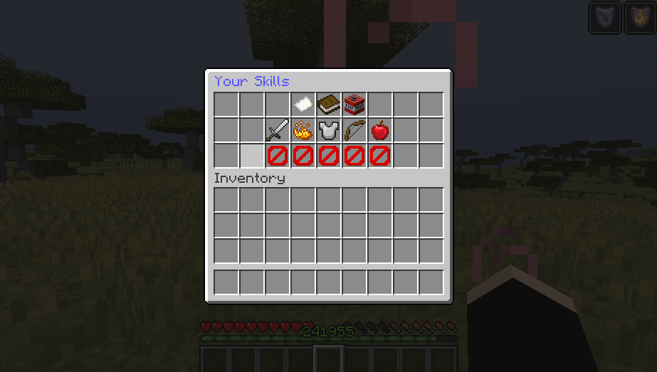
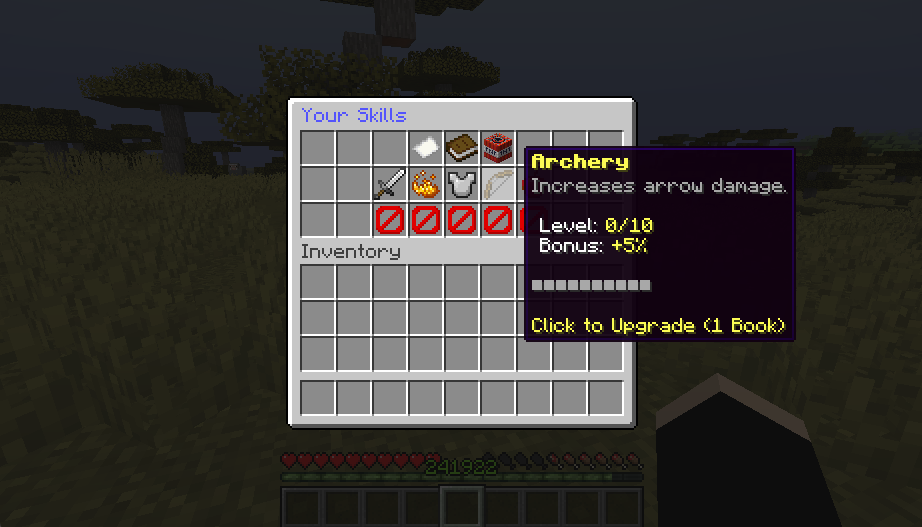
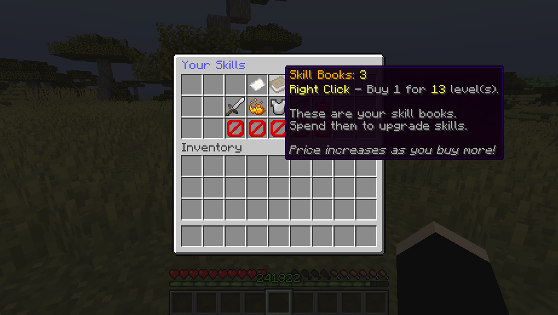

JAVA • MINECRAFT SPIGOT PLUGIN
Player Skills Reborn Again
Interactive Minecraft server plugin featuring a comprehensive skill and progression system for players. Built for high performance, zero lag, and full customizability.
Overview
Player Skills Reborn Again is a Spigot/Paper server plugin designed to enrich Minecraft gameplay with an RPG-style progression system. Players accumulate experience across core in-game activities, unlocking passive buffs and unique attributes as they level up.
The Inspiration: Rebuilt from the ground up to modernize an unmaintained classic plugin I played years ago, ensuring legacy mechanics remain available and optimized for modern Minecraft versions (1.20+).
Interface Design
In-game inventory menus and skill progression interfaces:



Key Features
Dynamic RPG Progression
Earn XP across Archery, Mining, Combat, and Defense to unlock passive buffs.
Custom Inventory GUI
Interactive chest menu interface for tracking skill levels and attribute points.
Full YAML Configuration
Configurable XP rates, skill caps, and messages via modular configuration files.